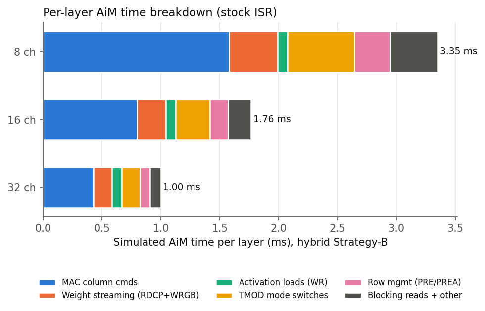
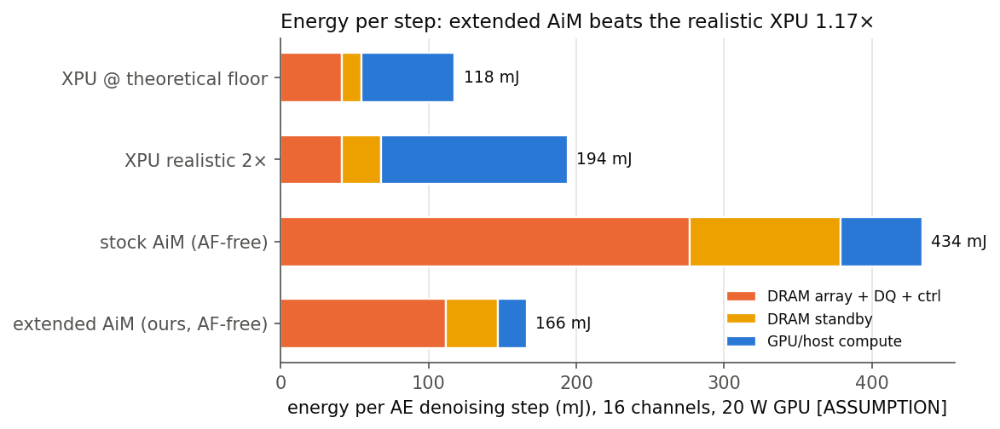
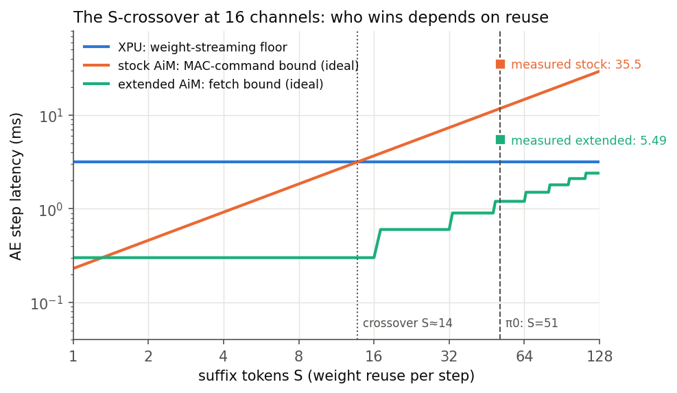

Offloading the Action Expert to Stock LPDDR5-AiM — and Why It Loses 5.8×
Part I showed the π0 Action Expert is memory-bound: 623 MB of weights re-streamed for 38.7 GFLOPs, every step. Processing-in-memory should fix exactly this. We map the AE onto a cycle-level SK hynix AiM-style LPDDR5-PIM simulator at Jetson-Orin memory parity (16 × x16 LPDDR5-6400 channels = 204.8 GB/s) — and the stock offload loses: 36.7 ms per denoising step vs. 6.3 ms for a realistic XPU baseline. This page explains the machine, the mapping, the measured breakdown, and the crossover law that makes a “memory-bound” workload lose on PIM.
Overview
Part II of four. The punchline is a negative result with a precise cause: the stock AiM ISA amortizes each in-bank memory fetch over one vector, one accumulator, and one register mode — and π0's 51-token suffix needs the opposite. Part III fixes it.
1LPDDR5-AiM: the machine
AiM (Accelerator-in-Memory, SK hynix HC34 / ISSCC’22) puts a 16-lane fp16 multiply-accumulate unit next to every DRAM bank, plus a small per-channel Global Buffer (GB) that broadcasts one vector to all banks.
Fig. 1 — The AiM machine model. The 16× internal:external bandwidth ratio is the whole value proposition — but note the three scarcity points that will matter: ONE vector in the GB, ONE accumulator per bank, and ONE in-order instruction stream from the DMA.
Memory geometry (as configured in the simulator's LPDDR5-AiM device): 32-channel device, 4 bank-groups × 4 banks per channel, 32 KB rows, 32 B column granularity (= 16 fp16 values, matching the MAC lane width and the GPR width). We activate 8/16/32 channels by mask; 16 channels × 12.8 GB/s = 204.8 GB/s external = exactly the Jetson AGX Orin memory budget (spec-verified: 256-bit LPDDR5-6400).
2The ISR instruction set
The host drives AiM with ISR (Instruction Set Register) commands. Each carries only the fields it needs, drawn from: opsize, GPR, channel_mask, bank, row. opsize unrolls an instruction over consecutive 32 B columns; channel_mask fans it out across channels in the same cycle.
| ISR | Operands | Semantics | DRAM command / cost class |
|---|---|---|---|
| WR_SBK | GPR, mask, bank, row | write one 32 B column from a GPR into one bank | WR (conventional write path) |
| WR_ABK | GPR, mask(1ch), row | write the same 32 B to all 16 banks | WRA16 |
| WR_GB | opsize, GPR, mask | fill the Global Buffer from the host, opsize columns | WRGB · reg-mode |
| WR_BIAS | GPR, mask | initialize the 16 banks’ MAC accumulators | WRMAC16 · reg-mode |
| COPY_BKGB / COPY_GBBK | opsize, mask, bank, row | move opsize columns bank ↔ GB (no host traffic) | RDCP / WRCP |
| MAC_SBK / MAC_ABK | opsize, mask, (bank,) row | MAC: bank row data × GB vector → per-bank accumulator; ABK = all 16 banks in parallel | MAC / MAC16, 1 per column slot (nCCD) |
| AF | mask | apply LUT activation (gelu) to the accumulators | AF16 |
| EWMUL / EWADD | opsize, … | elementwise multiply (bank-group) / add (GPRs) | EWMUL16 / (DMA-internal) |
| RD_MAC / RD_AF | GPR, mask | read 16 accumulators (one 32 B word/channel) to a GPR — blocks the DMA until complete | RDMAC16 / RDAF16 · reg-mode · blocking |
| RD_SBK | GPR, mask, bank, row | read one column from a bank | RD (conventional read path) |
| SYNC / EOC | — | barrier: drain all channels’ pending writes / end of compute | blocking, broadcast to all channels |
| W CFR | addr, data | configuration registers: broadcast mode, EWMUL bank-group, AF LUT select | host-side, free |
Three semantics that dominate performance
- Blocking reads.
RD_MAC/RD_AF/SYNC/EOCstall the (single, in-order) DMA until every sub-command completes — each result readback drains the pipeline. - Register-mode switching (TMOD). The datapath is either in normal array mode or register-access mode; every transition between {
WR_GB, WR_BIAS, RD_MAC, RD_AF} and other AiM ops costs a 32-cycleTMODcommand. - All-rows-open precondition.
MAC_ABK/AF/EWMULrequire all 16 banks open at the target row; if any bank sits on a different row the controller must issuePREA(precharge all) +ACT16(activate all) first. Alternating between rows is expensive by construction. - AiM vs. normal traffic mutual exclusion. Per channel, AiM commands are rejected while conventional reads/writes are buffered and vice versa — PIM compute and ordinary memory use of the same channel serialize.
3The simulator
We use the open-source aim_simulator (CENT, ASPLOS’25): Ramulator 2.0 with the AiM ISA, an AiM DMA front-end, an AiM-aware channel controller, and full GDDR6-AiM / LPDDR5-AiM timing models.
# trace-driven flow: a text trace of ISR instructions in, cycles out AiM WR_GB 64 0 0xffff # frontend parses one ISR per line... → DMA decodes 1 ISR/cycle, unrolls opsize×channels into per-column requests → per-channel controller: AiM FIFO (strict order) | R/W buffers (FR-FCFS) → device model: preconditions (ACT/PRE), timing (nCCD, nRCD*, TMOD), state → memory_system_cycles × tCK → time
- Timing that matters: one column command per
nCCD= 4 cycles; MAC/AF/copy commands are 1-cycle issue events whose real cost is the column spacing plus row-activation preconditions;TMOD= 32 cycles. - Clock convention: we convert cycles at tCK = 0.625 ns — calibrated so one channel’s external burst rate equals real LPDDR5-6400 x16 (12.8 GB/s). Documented assumption; all ratios are tCK-independent.
- Validation: the shipped micro-benchmarks and an all-ISR smoke trace run bit-identically before/after our study; a probe trace confirms the PREA→ACT16 row-management path fires as specified.
4What to offload, and why
The roofline from Part I picks the split: everything whose cost is streaming resident data goes to PIM; everything small, nonlinear, or shuffle-shaped stays on the host.
| Component | Share of step FLOPs | Share of step bytes | Placement | Why |
|---|---|---|---|---|
| 6 projections (Q/KV/O/gate/up/down) | 31.8 G (82%) | 622.9 MB (97%) | PIM | weights live in DRAM banks anyway; the whole point is to stop streaming them out |
| attention scores + context | 6.5 G (17%) | 16.0 MB KV | PIM | prefix K/V written once per control cycle, kept resident in banks (MQA makes it tiny: 0.94 MB/channel) |
| softmax, RMSNorm, RoPE, residuals, gate⊙up, Euler | 0.4 G (1%) | ~7 MB | host | stock AiM has no exp/rsqrt/reduction/shuffle primitives; these ops are <1 FLOP/B and tiny |
5Instruction-level mapping
A GEMM has two mappings onto AiM, differing in what stays in banks and what streams through the GB. We generate real traces for both (plus the attention path) and simulate them.
Fig. 2 — The two stock mappings differ in what is resident and what streams, but share the fatal constraint: one GB vector and one accumulator per bank.
Strategy A — weight-stationary (the native AiM GEMV pattern)
Weight rows live across banks/channels; each token's activation vector is broadcast via the GB; every bank accumulates one output element. Used for attention, where the resident data is the prefix K/V written once per control cycle:
# attention scores for one (token, head): q has 256 values = 16 columns AiM WR_BIAS 0 0xffff # zero the 16 accumulators [reg-mode] AiM WR_GB 16 0 0xffff # broadcast q (16 cols) into every channel's GB AiM MAC_ABK 16 0xffff 4000 # all banks: dot(my resident K-row, q) -> acc AiM RD_MAC 0 0xffff # read 16 scores/channel [reg-mode, BLOCKING] # x 4 K-row-groups (867 rows over 256 bank slots) x 51 tokens x 8 heads
Strategy B — activation-stationary (invented for S = 51)
The 51×1024 activation tile is loaded into banks (token t → bank t mod 16, token-group tg = t/16 → row tg); weight columns stream bank→GB with COPY_BKGB (no external traffic!); one MAC_ABK then computes 16 token-dot-products at once. Used for the six projections:
# one output column of q_proj (K=1024 = 64 columns of 32 B) AiM COPY_BKGB 64 0xffff 0 100 # stream weight column w_n from its bank into the GB # -- for each of the 4 token-groups (one accumulator per bank!): -- AiM WR_BIAS 0 0xffff # re-init accumulators [TMOD switch] AiM MAC_ABK 64 0xffff 0 # 16 tokens of group 0: dot(x_t, w_n) [row 0 open] AiM RD_MAC 0 0xffff # drain 16 partial results [TMOD, BLOCKING] AiM WR_BIAS 0 0xffff AiM MAC_ABK 64 0xffff 1 # token-group 1 -> PREA + ACT16 (row switch!) AiM RD_MAC 0 0xffff # ... groups 2, 3 ... then next output column (2048 of them for W_Q)
Around these, the trace carries the activation-tile loads (WR_SBK streams, since each layer’s input comes from the host-side residual stream), the once-per-cycle KV-load trace, AF for gelu on the gate path, and a SYNC at every host boundary (6 host segments per layer: norms, RoPE, softmax, gate⊙up, partial sums).
6Cycle-level execution walk-through (why it’s slow)
Follow one Strategy-B output column through the machine, with the actual per-event costs from the LPDDR5-AiM timing model:
- Weight streaming:
COPY_BKGB 64unrolls into 64 column reads, one per nCCD = 4 cycles → 256 cycles to move 2 KB into the GB. The GB holds one vector, so this repeats for every output column — 12,800 columns per layer. - Mode switch: the next op is
WR_BIAS, a register-mode op → the controller insertsTMOD(32 cycles). After the MAC,RD_MACforces another pair. Four token-groups × two switches each: 235,000 TMODs per layer. - Row management:
MAC_ABKfor token-group 1 targets row 1 while the banks sit on row 0 →PREA+ two-phaseACT16across all 16 banks, plus the ACT→MAC latency (nRCDRDMAC = 56 cycles). 112,000 PREA+ACT16 pairs per layer. - The MAC itself: 64 MAC16 commands × 4 cycles = 256 cycles — doing 16 tokens’ worth of useful work, but only for one token-group of the four.
- The drain:
RD_MACblocks the DMA until 16 accumulators × 16 channels land in GPRs. One accumulator per bank means this happens per (token-group × output column × K-chunk): 84,000 blocking reads per layer. - At each of the 6 host boundaries,
SYNCdrains every channel’s write pipeline; the host does its 0.16 ms of softmax/norm/RoPE work; the next AiM segment restarts cold.
Strategy A avoids the weight streaming but pays instead in per-token WR_GB broadcasts (51 tokens × every layer input) and the same accumulator/blocking pattern. Simulated, the two strategies land within 2% of each other — both are bound by the same per-command amortization, not by data movement.
7The baseline ladder: what “XPU floor” and “realistic 2×” mean
Before the results, the yardstick. All XPU baselines in this series are rungs on one ladder — estimates of how fast the Action Expert could run on Orin’s GPU, from physically impossible to actually measured:
| Rung | step (ms) | Definition | Exists? |
|---|---|---|---|
| theoretical floor | 3.15 | roofline physics: max(645.4 MB / 204.8 GB/s, 38.7 G / 42 T) = max(3.15, 0.92) ms. The 623 MB of weights are 150× Orin’s 4 MB L2, so every step must re-stream them across the bus; even a perfect implementation (bus 100% busy, compute fully hidden, zero launch gaps) takes 3.15 ms. Unbeatable by any software — it is the memory interface, not an implementation. | no — an ideal bound |
| realistic 2× | 6.30 | a well-engineered real stack sustaining ~50% of peak bandwidth end-to-end: fused kernels, tuned layouts, CUDA-graph launches. 2–4× floor is the standard empirical band for memory-bound transformer inference (heroic hand-tuned decoders reach ~1.3–1.7×). | hypothetical — no such public stack exists for π0 on Orin |
| realistic 4× | 12.61 | an ordinary well-compiled implementation. | plausible |
| compiled stack | ≈24 (Thor) | today’s stack after torch.compile — the measured effect of the standard software fix. The paper compiled Thor: 246 → 163 ms end-to-end (1.51×); per-step ≈24 ms assumes the speedup applies uniformly across phases [ASSUMPTION — only the end-to-end split was reported]. No compiled Orin number was reported at all, and even compiled, Thor’s AE sits 10× above its own physics floor — compilation recovers far less on edge silicon (1.51×) than on a 4090 (2.90×). | semi-measured (Thor) |
| measured stack | ≈136 | the characterization paper’s actual π0 on Orin: 543 ms per N=4 inference = 43× above the floor, at 22% SM utilization (unoptimized JAX/PyTorch). | yes — the only measured number |
8Results: latency and energy
Cycle-accurate AiM segments + an analytic Orin host model (roofline + 5–50 µs launch overhead, swept). One layer simulated, composed ×18 layers ×N steps.


| Config (20 µs overhead) | step (ms) | AE N=4 (ms) | AE N=10 (ms) | vs XPU floor |
|---|---|---|---|---|
| XPU-only floor / 2× / 4× | 3.15 / 6.30 / 12.61 | 12.6 / 25.2 / 50.4 | 31.5 / 63.0 / 126.1 | 1× |
| AiM hybrid-B, 8 ch | 68.45 | 274.0 | 684.7 | 21.7× slower |
| AiM hybrid-B, 16 ch (Orin parity) | 36.71 | 146.9 | 367.2 | 11.6× slower |
| AiM hybrid-B, 32 ch | 21.73 | 86.9 | 217.3 | 6.9× slower |
KV-load (once per control cycle): 74 µs at 16 ch — negligible. Launch-overhead sweep 5→50 µs moves the 16-ch step 35.0→40.0 ms: host overhead is not the story.
Stock AiM loses on energy too
Slowness is itself an energy cost: during the 36.7 ms step the whole 16-channel memory system burns standby power (131 mJ), and the per-command overheads (TMOD churn, blocking drains, row thrash) add array traffic on top. Modeled with the CENT per-command energy constants shipped with the simulator (DQ 5.5 pJ/bit; 20 W AE-phase GPU assumption, swept 15–30 W — full model and assumptions in Part III §9):

9Limitations & root causes: the S = 16 crossover
“The AE is memory-bound and PIM fixes memory” fails because memory-bound is relative to the machine — offloading changed which resource binds.
| Resource | XPU (Orin) | Stock AiM, 16 ch |
|---|---|---|
| weight-read bandwidth | 204.8 GB/s — binds | 3.28 TB/s internal — idle headroom |
| effective compute on this workload | 12.3 TFLOP/s achieved (42 peak, loafing at the BW floor) | 3.3 TFLOP/s — binds (16 banks × 16 lanes × 2 FLOP per 4-cycle slot) |
- The XPU reuses; AiM cannot. At I = 60 FLOPs/B the XPU reads each weight once and applies it to all 51 tokens from cache. The stock ISA gives each in-bank fetch exactly ONE GB vector and ONE accumulator: a fetch serves one token. The 16× internal bandwidth is real but un-reusable.
- Crossover law. Stock AiM beats the XPU floor when S ≤ ~16 (bank parallelism covers the token count — the batch-1 LLM-decode regime AiM was designed for). At S = 51 it loses by ≈ 51/16 = 3.2× before overheads; TMOD churn, blocking drains, and row thrash widen it to the measured 5.8–11.6×.
- Each limitation exists for a hardware reason. One GB vector: the GB is a 2 KB broadcast SRAM sized for GEMV. One accumulator/bank: a single 16-bit MAC register minimizes area in DRAM periphery. TMOD: the shared datapath multiplexes array and register access. Blocking reads: the single in-order DMA is the hazard mechanism. All are sensible for S = 1 — and all are wrong for S = 51.

Series & sources
- Part I — Anatomy of a flow-matching VLA: π0 module by module
- Part II (this page) — Offloading the Action Expert to stock LPDDR5-AiM.
- Part III — Eight problems, six ISA extensions: from 36.7 ms to 4.81 ms per step
- Part IV — Deployment platforms: where robots actually run VLAs & the speed/energy baseline matrix
Sources: arkhadem/aim_simulator @ 0f28a07 (CENT, ASPLOS’25; MIT); SK hynix AiM: HC34 poster + ISSCC’22/JSSC’23 papers; NVIDIA Jetson AGX Orin Technical Brief v1.2 (42 TFLOP/s bf16, 204.8 GB/s, spec-verified); trace generator, sweep scripts, and CSVs in the study workspace — every number regenerates from committed traces.